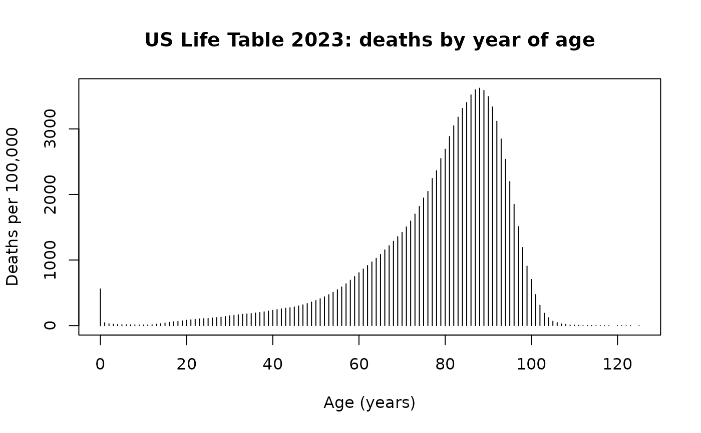

The published NCHS United States life table for 2023, expressed on a
synthetic radix of 100,000, as a PROC HAZARD job consumes it: one
interval-censored row per year of age, weighted by the number of deaths
falling in that year. Aggregate published counts only – no patient-level
data and no PHI.
Format
A data frame with 124 rows and 3 variables:
- age_l
Lower bound of the age interval, in years (integer)
- age_u
Upper bound of the age interval, in years (integer);
age_u - age_lis exactly 1 on every row- d_all
Deaths in the interval on a 100,000 radix. This is the ICENSOR variable, and it is a weight, not an indicator – a fact the weighted life table forces and 335 occurrences of
icensor icens_wt=il_deadacross the SAS corpus corroborate. Sums to 100000.0125; ranges from 0.2352 to 3620.335
Source
National Center for Health Statistics, United States Life Tables,
2023. Derived from /studies/general/uslife/table2023 via
data-raw/make_data.R; inst/extdata/uslife2023.csv is the durable
source, reproducible without a SAS license.
Details
This is the reference fixture for objective = "sas". It is the cleanest
available anchor for that form for two reasons. Every row is
interval-censored, so nothing else dilutes the signal; and every interval
is exactly one year wide, so \(\log(u - l) = 0\) and the width term
switches off, isolating the \(S(u)\,\Delta\Lambda\) core. It also settles
by itself the rival hypothesis that SAS bakes in a constant width divisor:
that reading is off by 593,146 log-likelihood units here.
Two rows of the source table – ages 119–120 and 124–125 – carry
d_all == 0 and are dropped by the SAS job's own
IF D_ALL=0 THEN DELETE, leaving 124 of 126. The age grid is therefore not
contiguous, which is why the fixture carries explicit age_l/age_u
columns rather than an implied one-year step.
References
The SAS reference fit is distributions/hz.icall.lst in that study, whose
printed log-likelihood is -410414 with Number of events conserved =
100000.
Examples
data(uslife2023)
# Every interval is one year wide -- the property that makes this the anchor.
stopifnot(all(uslife2023$age_u - uslife2023$age_l == 1))
# Deaths by age, on the published 100,000 radix.
plot(uslife2023$age_l, uslife2023$d_all, type = "h",
xlab = "Age (years)", ylab = "Deaths per 100,000",
main = "US Life Table 2023: deaths by year of age")
